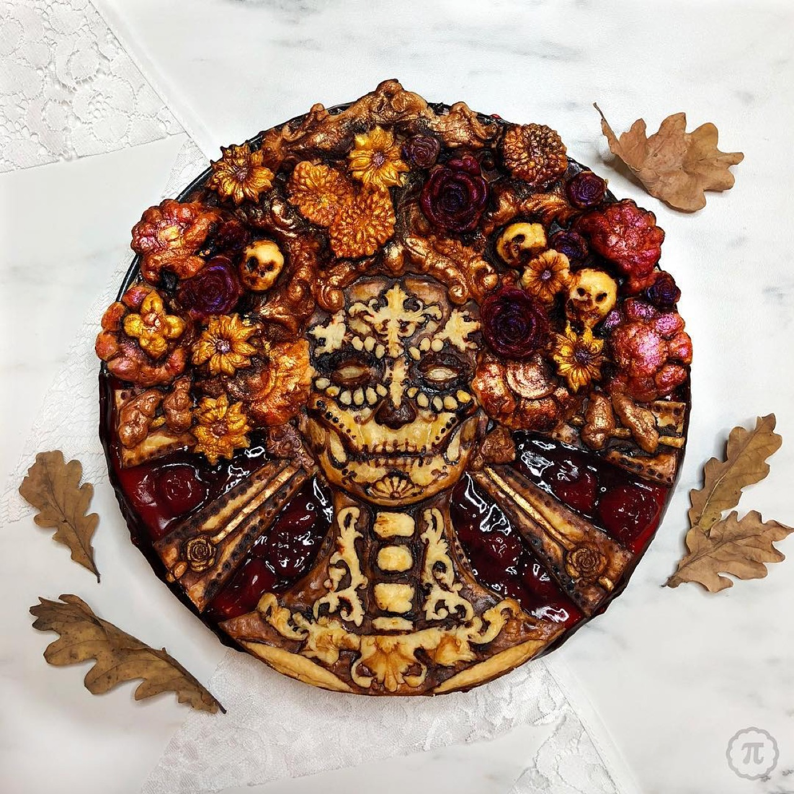

Steampunk art incorporates Victorian-era aesthetic sensibilities with industrial, mechanical, and technological imagery, creating retro-futuristic visual worlds blending historical nostalgia with imaginative speculation. Steampunk artists work across diverse media including sculpture, digital art, photography, and installation, creating work celebrating mechanical aesthetics and alternate technological histories. The movement encompasses both artistic practice and broader cultural aesthetic encompassing literature, fashion, and design. Steampunk art demonstrates how blending historical styles with contemporary imagination generates distinctive visual languages and conceptual frameworks permitting artists to explore technology, industrialization, and aesthetic value.
These Pop-Culture Inspired Pies Should Be Considered Works of Art
